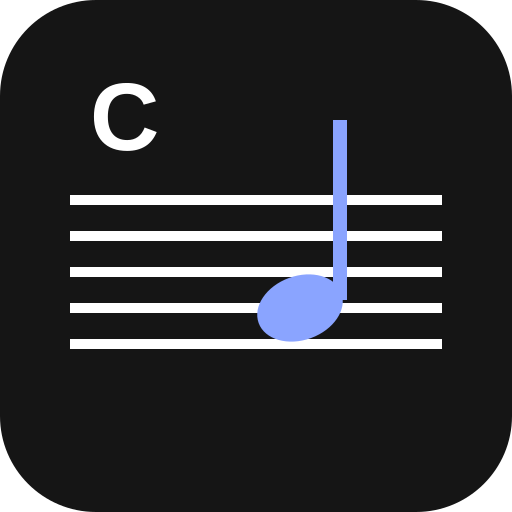

Partitura violão · tecladoEscolha o instrumento, toque perto do microfone ou envie uma gravação (do celular serve, até em vídeo). A página descobre o andamento, o tom e os acordes, e escreve a cifra numa pauta.
Acordes e cifra. O som é decomposto nas 12 notas da escala e comparado com moldes de acordes maiores, menores e com sétima, batida por batida.
Andamento e tom. Os ataques das batidas marcam o pulso; o conjunto das notas indica o tom.
Teclado. Piano, órgão, strings e pad. No modo Melodia o teclado usa pauta dupla: clave de sol para a mão direita, clave de fá para a esquerda.
Acordes com nona, suspensos ou com baixo trocado (C/E) saem simplificados. A melodia só funciona com uma nota por vez, sem acompanhamento. Se o andamento sair o dobro ou a metade, use ½× ou 2×.
Pad e strings entram devagar, sem ataque marcado: o andamento é deduzido pelas trocas de acorde. Confira ouvindo e corrija com ½× ou 2× se precisar.
Grave perto do instrumento, num lugar quieto. Celular tocando outro celular funciona, mas alto-falante pequeno perde o grave: uma caixinha de som ajuda. Toque em Gravar e comece tocando: silêncio longo no começo atrapalha achar o primeiro compasso. Arquivos de até 4 minutos.